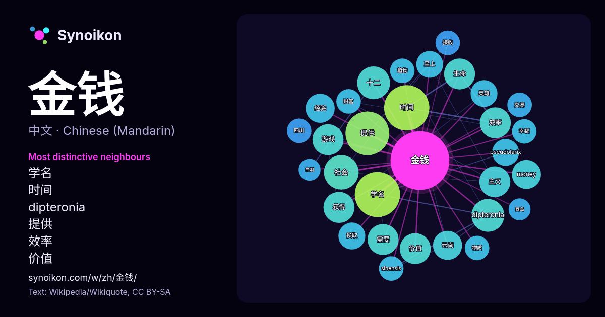

中文 · 热门词
金钱
“money” · 来自维基百科, Wikiquote 418 次出现中其周围的词。

最具特色的邻近词
- 学名 18×
- 时间 12×
- dipteronia 10.0×
- 提供 8.8×
- 效率 8.3×
- 价值 8.2×
- 十二 8.0×
- money 8.0×
- 社会 7.7×
- 生命 7.5×
- 云南 7.5×
- 经验 7.5×
- pseudolarix 7.0×
- 换取 6.9×
- 至上 6.9×
- 主义 6.6×
- 游戏 6.3×
- 英雄 6.2×
- sinensis 6.0×
- 财富 5.9×
× = 比维基百科普通文本中多出的倍数。
最常见的邻近词
- 学名 17
- 时间 17
- 提供 16
- 中国 11
- 社会 10
- dipteronia 9
- 十二 9
- 主义 8
- 价值 8
- 效率 8
- 游戏 8
- 生命 8
- 获得 8
- 需要 8
- money 7
- 云南 7
- 政治 7
- 没有 7
- 经验 7
- 重要 7
上下文
- 金钱鱼（学名：Scatophagus argus）为輻鰭魚綱鱸形目刺尾魚亞目金钱鱼科的其中一種，俗名金鼓。 本魚分布于印度太平洋區，包括紅海、波斯灣、阿曼灣、伊朗、斯里蘭卡、孟加拉、巴基斯坦、印度、柬埔寨、日本、韓國、中國、台灣、越南、泰國、新加坡、馬來西亞、菲律賓、巴布亞紐幾內亞、澳洲、密克羅尼西 Wikipedia snippets · 金钱鱼
- 金钱河，又名夹河，是中国长江流域汉水水系的一条河流，汇入汉水上游左岸。河长261千米，流域面积5610平方千米，多年平均流量54立方米每秒。自然落差2030米。水能理论蕴藏量24万千瓦。 王杰等主编.长江大辞典. 1997, 武汉出版社. Wikipedia snippets · 金钱河
- 广州鹰金钱食品集团有限公司（英語：Guangzhou Eagle-Coin Food Group Co., Ltd.），簡稱广州鹰金钱食品集团、鷹金錢，前身為「廣州市鷹金錢企業集團公司」及1956年由廣州市政府設立的「廣東罐頭廠」。罐頭品牌源於1893年创建的廣茂香罐頭廠。1987年更名為「广州市 Wikipedia snippets · 鷹金錢集團
- 《金钱骗局》（英語：Farzi）是一部印度印地语黑色喜剧犯罪惊悚电视剧，由拉吉與DK创作、制作和导演，还与 Sita Menon 和 Suman Kumar 共同创作了该剧集。该剧由沙希德·卡普尔、維傑·西圖帕提、凯·凯·梅农、拉茜·坎納和布溫·阿羅拉主演，讲述了一位幻灭的艺术家决定制作假币的故事。 Wikipedia snippets · 金钱骗局
- 自己的作品中提出了那个时代的主要社会性的问题：专制制度与民众的关系问题，贵族的生活道路问题、农民问题；塑造了有高度概括意义的典型形象：“多余人”、“金钱骑士”、“小人物”、农民运动领袖。这些问题的提出和文学形象的产生，大大促进了俄国社会思想的前进，有利于唤醒人民，有利于俄国解放运动的发展。 Wikipedia snippets · 亚历山大·普希金
- 金钱侠》，台湾译《現金英雄》）為於2025年12月26日播出的Netflix韓國原創劇集，改編自同名網路漫畫，由李俊昊、金慧峻、金炳哲、金香起主演，《加油吧威基基》、《代理公司》的導演李昌民執導，《薛西弗斯的神話》的編劇李濟仁、全燦浩執筆。講述平凡公務員姜常雄（李俊昊 飾）獲得與金錢 Wikipedia snippets · 現金英雄
- 他新成立的祖国斗士党。马哈迪曾一度宣布退出政坛，以让年轻领袖取代他，之後在受到党员反对后改口称如果人民愿意，自己会再次出任首相职位，以杜绝马来西亚的金钱政治，他也认为斗士党在来届大选可成為「造王者」。2021年7月8日，马哈迪宣布斗士党已成功注册。 2022年2月23日，马哈迪在布城首要领导基金会推 Wikipedia snippets · 马哈迪·莫哈末
- 金錢會事件，又稱金錢會起義、金錢會之亂，是清咸丰十一年（1861年）以金钱会为首的乡勇在浙闽边境发起的武装冲突。事件的起因是乡绅陈安澜与牙户李子荣之间的个人恩怨，后来演变为金钱会与地方团练白布团之间的冲突，最后金钱会攻下福鼎、平阳，攻打温州，并围困瑞安城，浙闽总督庆端后派军于同治元年平定了这一冲突。 Wikipedia snippets · 金錢會事件
更多词
于 2026-10-09 以默认设置预先计算（±5 个词，中等语料）。交互式图可用实时数据刷新。
界面为机器翻译，欢迎指正。